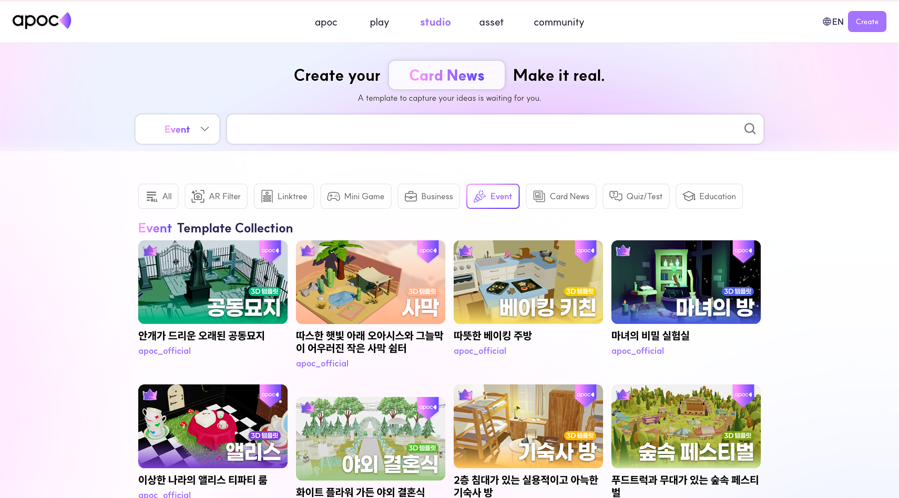
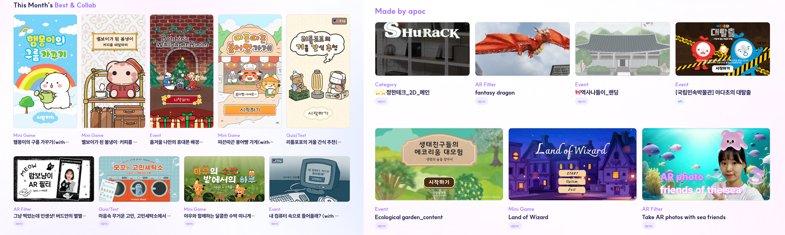
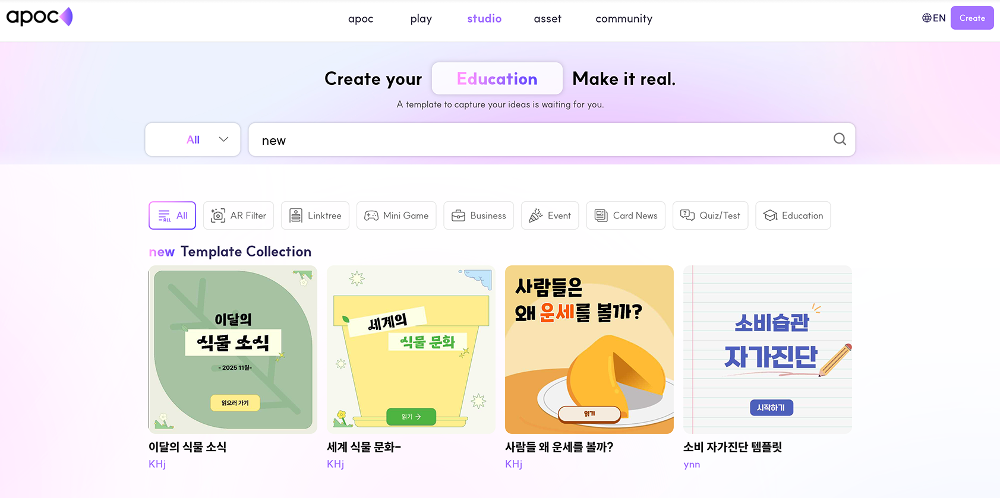
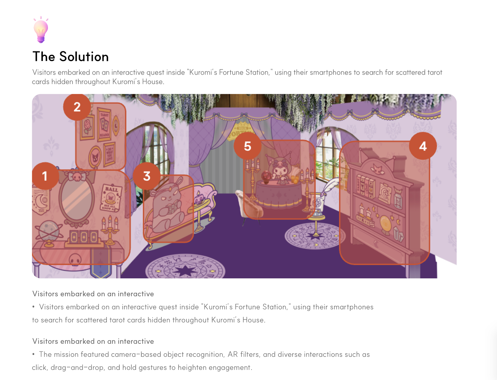

Designing Discovery
& Storytelling for APOC Studio

Summary
Mission
The Studio platform hosted a rapidly growing range of assets—including AR filters, 3D templates, event-based bundles, and large-scale B2B brand collaborations. However, users lacked structured ways to discover, understand, and evaluate this content, both for self-serve asset exploration and external-facing B2B storytelling.
The mission of this project was twofold:
- To design a scalable discovery experience that enables efficient exploration of a large asset ecosystem
- To create a premium, reusable case study framework that clearly communicates the value of Studio's B2B collaborations
Together, these efforts aimed to improve content clarity, usability, and the overall perceived credibility of the Studio platform.
My Contributions
As a UX/UI Designer intern, I led the end-to-end design of two core platform experiences from scratch:
Studio Discovery Page
- Rebuilt the information architecture to support diverse asset types and user intents
- Designed a scroll-based discovery flow that balances variety with cognitive simplicity
- Created a modular card system for fast scanning and comparison
- Defined responsive layouts for both desktop and mobile
B2B Project Detail Page
- Designed the first dedicated case study page for brand collaborations
- Established a reusable storytelling structure (context → solution → impact)
- Introduced visual annotation layers to explain complex UI decisions efficiently
- Designed a content-heavy layout system optimized for clarity and readability across devices
I was responsible for the full design process, from early wireframes to final UI, ensuring all components were scalable and development-ready.
The Impact
This work marked a foundational shift in how Studio content is surfaced and communicated:
Studio Discovery Page
- Launched the platform's first dedicated asset discovery experience
- Consolidated fragmented content into a single, structured exploration flow
- Improved users' ability to quickly understand available asset types and use cases
- Established a scalable discovery template for future content expansion
B2B Project Detail Page
- Delivered the company's first reusable B2B case study framework
- Improved clarity and narrative quality for brand collaboration projects
- Elevated Studio's external-facing brand credibility
- Enabled consistent documentation of future B2B partnerships across desktop and mobile
Project 1. Studio Discovery Page
Asset Discovery Experience · Desktop & Mobile
Overview
The Studio platform hosts a wide range of AR filters, 3D templates, and event-themed assets. However, users lacked a dedicated way to browse, explore, and discover this content.
I designed the first-ever Studio Discovery Page, defining the information architecture, scroll-based section flow, and UI system from the ground up.
Primary goals:
- Help users understand what types of templates exist
- Enable quick discovery of popular or relevant assets
- Allow exploration of diverse categories with minimal cognitive load

Before: Various templates mixed together without clear grouping or categorization
Challenge
1. Many asset types, no structure
As the platform grew, Studio accumulated:
- AR Filters
- DL Templates
- Event / Festival bundles
- Seasonal assets
But there was no cohesive IA to guide exploration or help users compare options.
2. Discovery flow had to be created from scratch
This was not a standard listing page. The challenge was to design a scroll-based discovery experience that surfaces content contextually—balancing variety without overwhelming users.
3. New components without breaking the brand
The existing Studio brand relied on:
- Soft gradients
- Rounded modules
- Clean white canvas
New UI modules and grid systems had to feel native to the brand, not bolted on.
Vertical text transition in the hero headline
Solution
I structured the Discovery Page as a scroll-based narrative composed of modular content sections, allowing users to progressively explore Studio's assets as they move down the page. The layout combines sections such as top categories, trending and most-used templates, student favorites, and situational recommendations, all built on a consistent card-based grid system to support fast scanning and deeper exploration. At the top of the page, large visual category entry points clearly communicate the platform's asset types—such as AR filters, DL templates, and event-based assets—helping users quickly orient themselves and understand the overall scope of the content.

After: "New" search results organized into clear categories for easier discovery
Results & Impact
- Launched the first dedicated discovery page for Studio
- Improved asset clarity and exploration efficiency
- Consolidated fragmented content into a single, structured flow
- Created a scalable discovery template used for future content expansion
- Successfully deployed across desktop and mobile
Project 2. B2B Project Detail Page
Case Study System for Brand Collaborations · Desktop & Mobile

Overview
Studio partnered with global brands on large-scale interactive projects, but lacked a dedicated way to present these collaborations with clear storytelling and premium visual quality.
I designed the first B2B project detail page, building a reusable case-study template that communicates context, creative process, and measurable outcomes.
Challenge
1. The purpose of the page had to be defined first
Existing project listings relied heavily on thumbnails, making it difficult to convey:
- Project context
- UX decisions
- Business impact
2. Diverse projects required a unified structure
Each B2B collaboration differed in:
- Purpose
- Interactive features
- Visual assets
- KPIs
A scalable storytelling framework was required to support future projects.
3. High visual fidelity for a B2B audience
The page needed to:
- Reflect a premium brand image
- Support long-form content
- Highlight rich visuals without overwhelming users
Solution
To clearly communicate the value of each B2B collaboration, I designed a reusable case study narrative framework that guides readers through a complete, end-to-end story. The page is structured to move from high-level context to concrete outcomes, beginning with a hero section that establishes the project's identity, followed by an overview that summarizes the collaboration at a glance. The narrative then transitions into the project's purpose, outlining the background and goals, before detailing the solution through UX flows, key features, and visual executions. To reinforce the real-world impact of each project, I integrated quantitative performance metrics wherever available—such as global B2B reach—to anchor the storytelling in measurable results. This structure allows stakeholders to quickly grasp both the creative decisions and the business value behind each collaboration, while remaining flexible enough to scale across future B2B projects with varying scopes and outcomes.


Approach
- Interviewed internal team members to extract project goals and insights
- Organized content into narrative buckets (context → solution → outcome)
- Designed reusable module systems
- Created custom annotation overlays
- Iterated between wireframes and final visuals to refine hierarchy
Results & Impact
- Delivered the company’s first dedicated B2B case-study template
- Improved clarity and storytelling for brand collaborations
- Elevated Studio’s external-facing brand credibility
- Enabled scalable documentation for future B2B projects
- Successfully adapted for desktop and mobile
Why These Projects Matter
- Designed from zero to launch, not incremental tweaks
- Solved discovery and storytelling problems at a platform level
- Built scalable systems, not one-off screens
- Delivered consistent UX across desktop and mobile